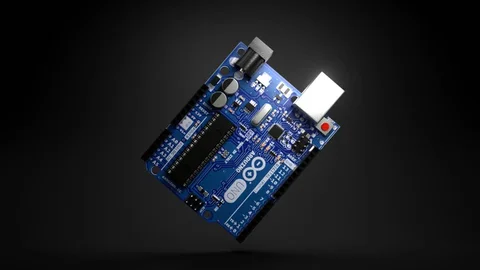
Arduino Uno
Microcontrolador encargado de procesar los datos enviados por el sensor.
Costo: $180 - $350 MXN
Proyecto basado en Arduino Uno y Sensor Ultrasónico HC-SR04
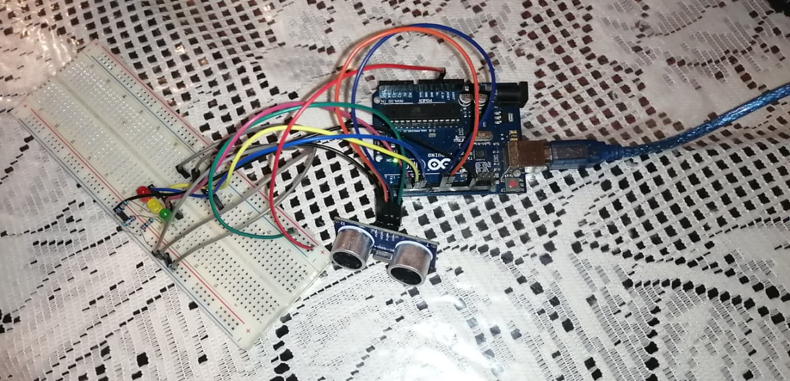
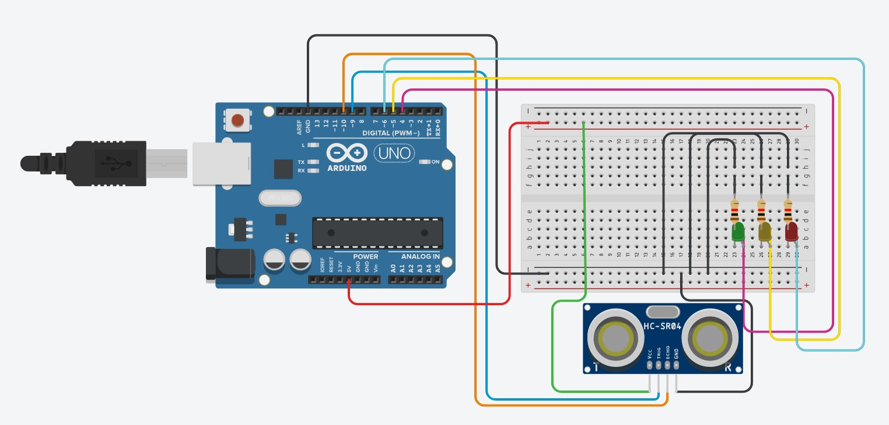
Este proyecto consiste en un sistema inteligente de medición de distancia utilizando Arduino Uno, un sensor ultrasónico HC-SR04 y LEDs indicadores. Primero fue diseñado y probado mediante una simulación en Tinkercad y posteriormente fue construido físicamente para comprobar su funcionamiento.
Este sistema utiliza un sensor ultrasónico HC-SR04 para medir la distancia entre el dispositivo y un objeto. Dependiendo de la distancia detectada, Arduino activará un LED específico para indicar el rango medido.
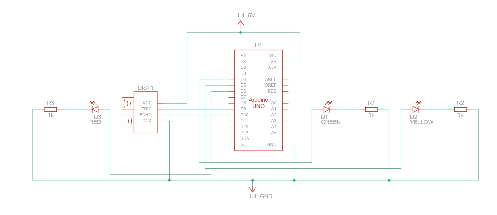

Microcontrolador encargado de procesar los datos enviados por el sensor.
Costo: $180 - $350 MXN
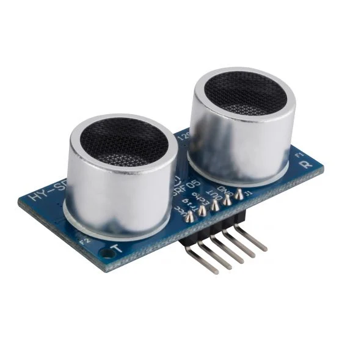
Sensor ultrasónico utilizado para medir distancias mediante ondas de sonido.
Costo: $40 - $90 MXN
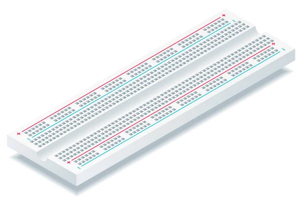
Permite realizar conexiones sin necesidad de soldar componentes.
Costo: $50 - $120 MXN
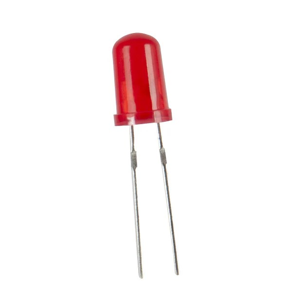
Indica que el objeto se encuentra muy cerca del sensor ultrasónico.
Costo: $2 - $5 MXN
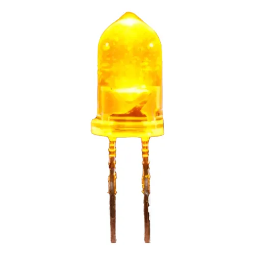
Indica una distancia intermedia entre el sensor y el objeto detectado.
Costo: $2 - $5 MXN
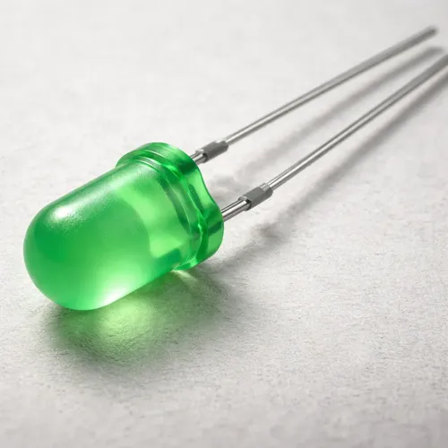
Indica que el objeto se encuentra a una distancia segura.
Costo: $2 - $5 MXN
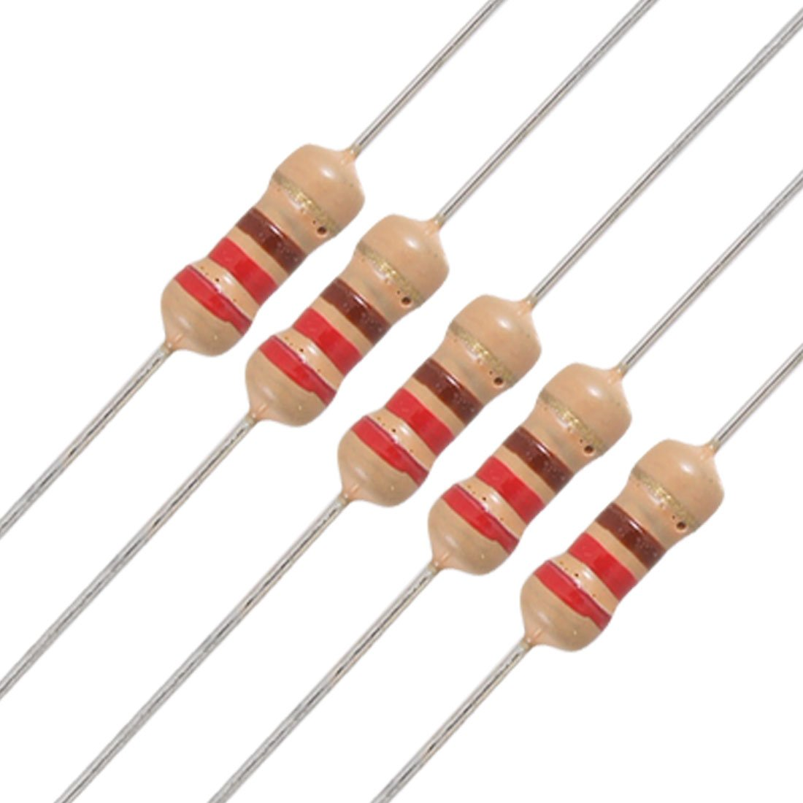
Limita la corriente eléctrica que pasa a través de los LEDs, evitando daños en los componentes y garantizando un funcionamiento seguro.
Costo: $1 - $3 MXN c/u
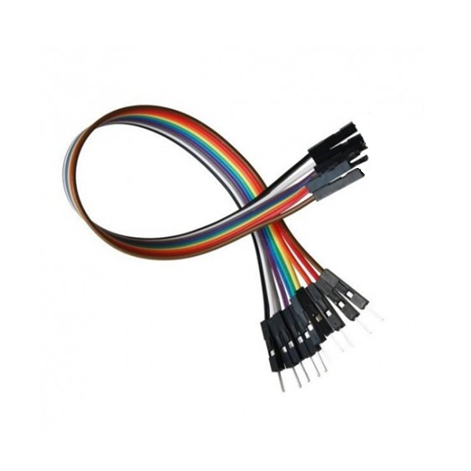
Cables utilizados para conectar los componentes entre sí.
Costo: $20 - $60 MXN
| Componente | Costo Aproximado |
|---|---|
| Arduino Uno | $180 - $350 MXN |
| Sensor HC-SR04 | $40 - $90 MXN |
| Protoboard | $50 - $120 MXN |
| LED Rojo | $2 - $5 MXN |
| LED Amarillo | $2 - $5 MXN |
| LED Verde | $2 - $5 MXN |
| Resistencia 220 Ω | $1 - $3 MXN c/u | Jumper | $20 - $60 MXN |
Nombre: Galdino Ángeles Gpnzález
Grupo: 601
Semestre: 6° Semestre
Carrera: Informática
Esta págian fue hecha con el conosimientos adquirido en las actividades realizadas en la matería de Diseño y Elaboración de Páginas enseñada por el docente Félife López Salazar en el CONALEP Plantel "Pachuca II".